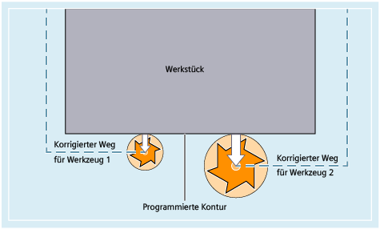

Werkstückmaße werden direkt programmiert (z. B. nach Fertigungszeichnung). Werkzeugdaten wie Fräserdurchmesser, Schneidenlage der Drehmeißel (linker / rechter Drehmeißel) und Werkzeuglängen müssen daher bei der Programmerstellung nicht berücksichtigt werden.
Bei der Fertigung eines Werkstücks werden die Werkzeugwege abhängig von der jeweiligen Werkzeuggeometrie so gesteuert, dass mit jedem eingesetzten Werkzeug die programmierte Kontur hergestellt werden kann.
Damit die Steuerung die Werkzeugwege berechnen kann, müssen die Werkzeugdaten im Werkzeugkorrekturspeicher der Steuerung eingetragen sein. Über das NC-Programm werden lediglich das benötigte Werkzeug (T...) und der benötigte Korrekturdatensatz (D...) aufgerufen.
Die Steuerung holt sich während der Programmverarbeitung die benötigten Korrekturdaten aus dem Werkzeugkorrekturspeicher und korrigiert für unterschiedliche Werkzeuge individuell die Werkzeugbahn:
Siehe auch:
Werkzeuglängenkorrektur
Werkzeugradiuskorrektur
Werkzeug-Korrekturspeicher
Werkzeugtypen und Werkzeugparameter
Werkzeugkorrekturen aktivieren/deaktivieren (D, D0)
Werkzeugkorrekturen unterdrücken (SUPD)
Programmierbarer Werkzeugkorrektur-Offset (TOFFL, TOFF, TOFFR, TOFFLR)